O chatbot que funciona dentro de um terminal, no computador de quem rodou o código é limitado. Para que outras pessoas possam usá-lo, em qualquer dispositivo e de qualquer lugar, é preciso transformá-lo em uma API web.
Imagine que você criou uma receita deliciosa, mas enquanto ela existe só na sua cabeça, você precisa cozinhá-la e só poderá servir em casa. Para que outras pessoas possam provar esse prato, você precisa abrir um restaurante. A API é o restaurante. Qualquer pessoa pode fazer um pedido, sem precisar entrar na cozinha e sem precisar saber como o prato é feito. É preciso construir esse restaurante. Ele vai funcionar aqui no seu computador (localmente), por enquanto só você acessa. Se colocarmos no servidor na internet, aí a porta se abre para o mundo.
Na prática, isso significa que se o nosso chatbot fosse colocado em um servidor da internet, ele pararia de rodar direto no terminal e rodaria em um servidor que fica 'escutando' pedidos, como o navegador, um aplicativo de celular, uma página HTML, qualquer um desses que pode enviar uma mensagem para o servidor e receber uma resposta. O código Python continua sendo o mesmo, mas agora ele atende a todos, não só a quem tem o Python instalado.
No começo, o servidor vai rodar aqui mesmo, no seu computador. Isso é o suficiente para desenvolver, testar e entender como tudo funciona. Depois, quando o projeto estiver pronto para ser entregue, é possível colocá-lo numa plataforma na nuvem. Por enquanto, o foco é fazer o servidor funcionar localmente.
Antes de escrever qualquer código, é preciso instalar o FastAPI e o uvicorn. O uvicorn é o servidor que vai colocar a API no ar. Nós instalamos os dois juntos com um único comando no terminal do VSCode, o mesmo terminal que usamos para rodar os outros códigos.
pip install fastapi uvicorn
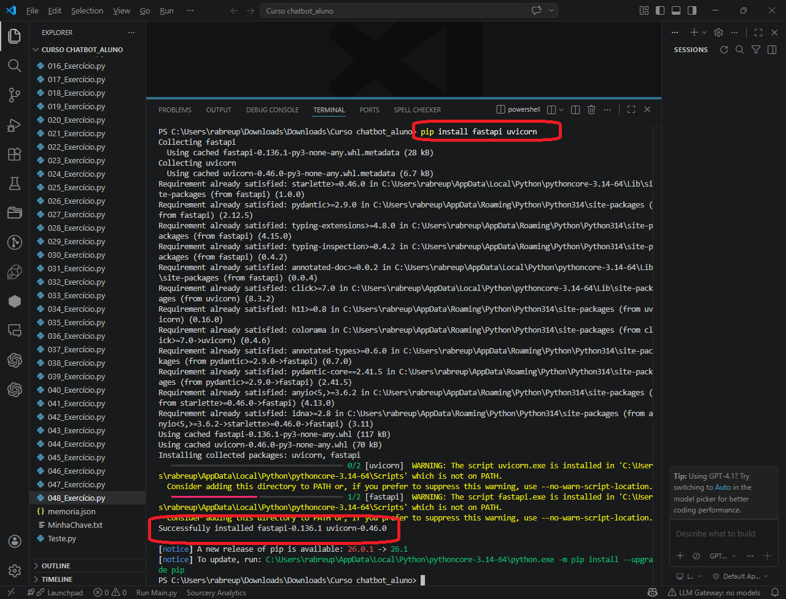
Veja que apareceu “Successfully installed...”, isso indica que a instalação foi concluída.
Pronto! Agora podemos criar a nossa primeira API. O arquivo de uma API FastAPI tem uma estrutura diferente de um script comum, em vez de um loop esperando o usuário digitar, definimos funções que o servidor chama automaticamente quando uma requisição chega.
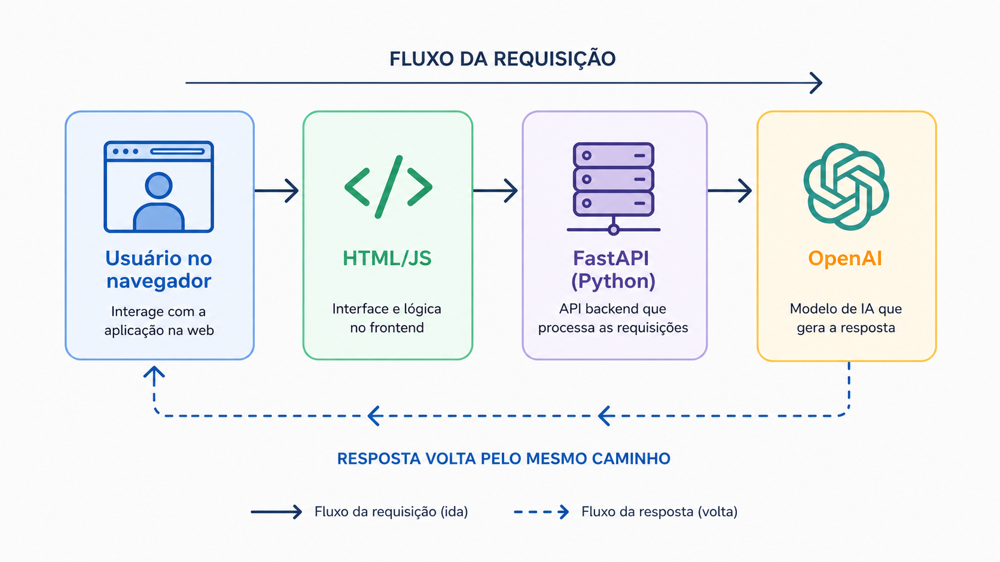
Para criar esse servidor, nós vamos usar uma biblioteca Python chamada FastAPI. FastAPI tem três características que fazem dela uma ótima escolha aqui. A primeira é que ela é simples de usar, o código fica limpo e legível. A segunda é que ela gera automaticamente uma página de testes, sem precisar instalar nada extra. E finalmente a terceira é que ela é rápida, tanto para desenvolver quanto para rodar.
/docs para testar/docs é uma página de documentação interativa que o FastAPI gera automaticamente, sem você precisar fazer nada. ***Um framework é um conjunto de ferramentas e regras já prontas que agilizam o desenvolvimento. Em vez de escrever do zero tudo o que envolve receber uma requisição HTTP, interpretar os dados e devolver uma resposta, você usa uma base que já resolve essas partes. O FastAPI é isso, uma base construída especificamente para criar APIs com Python, com boas práticas embutidas.
Já as rotas, que podemos chamar de endereços, são os caminhos dentro da sua API, cada um associado a uma ação. Funciona como o cardápio de um restaurante: cada item tem um nome e descreve o que você recebe ao pedi-lo. No FastAPI, @app.get("/") registra o endereço / para buscar informação, e @app.post("/chat") registra o endereço /chat para enviar mensagens. Quando uma requisição chega nesse endereço, a função que segue na programação logo abaixo da linha @app.get("/") é chamada automaticamente.
HTTP é o protocolo padrão da web, ou seja, o conjunto de regras que define como computadores trocam informações na internet
Esses são os conceitos principais a entender, vamos seguir. Com o FastAPI instalado, o próximo passo é criar o arquivo Python da API. A primeira linha é sempre importar o FastAPI. Em seguida, criamos o app, que é a própria API. Pensa nele como o restaurante já aberto: antes de colocar qualquer comida (rota) no cardápio, o restaurante precisa existir.
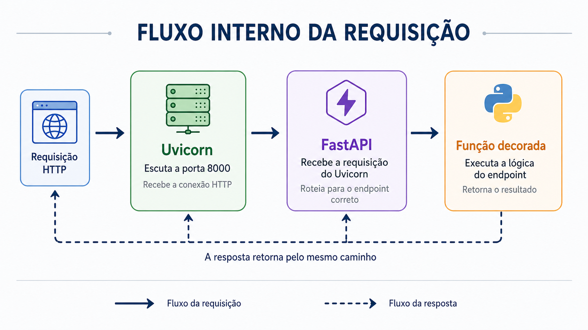
Vamos criar o arquivo 049_Exercicio.py com o código abaixo e executar clicando em Run Python File.
from fastapi import FastAPI import uvicorn app = FastAPI() @app.get("/") def raiz(): return {"mensagem": "API funcionando!"} if __name__ == "__main__": uvicorn.run("049_Exercicio:app", host="0.0.0.0", port=8000, reload=True)
Para rodar, usamos o terminal do VSCode, na mesma pasta do arquivo, com o comando python 049_Exercicio.py. Quando o uvicorn iniciar, ele vai mostrar uma mensagem indicando que a API está disponível em http://127.0.0.1:8000. O 127.0.0.1 é sempre o endereço do próprio computador, e o 8000 é a porta que escolhemos.
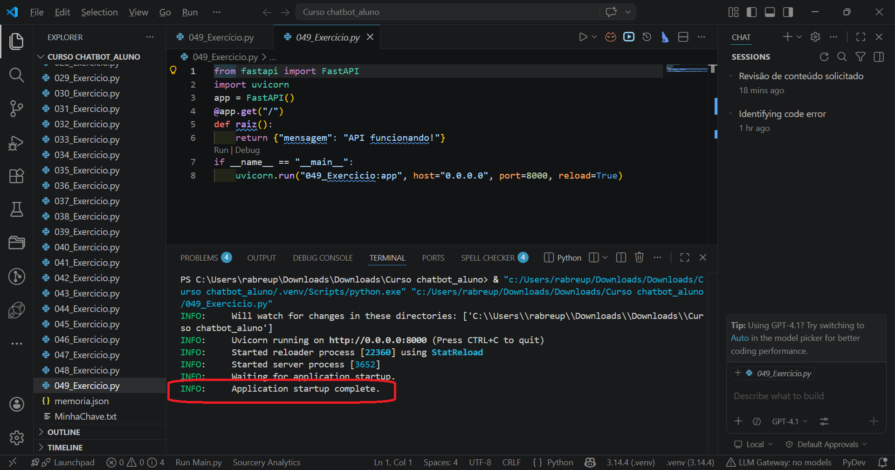
| FastAPI() | Cria a aplicação. É o objeto central que vai receber todos os endereços registrados. Por padrão, chama-se app. |
| @app.get("/") | Define um endereço da API. O @ é um decorador, que é uma forma de "etiquetar" uma função. Aqui, estamos dizendo que a função raiz responde a requisições do tipo GET no endereço "/", que é a raiz da API. |
| return {...} | A resposta. O FastAPI converte automaticamente o dicionário Python em JSON, que é o formato padrão de resposta de APIs. |
| uvicorn.run(...) | Coloca a API no ar. O primeiro argumento é o nome do arquivo e o objeto da aplicação, separados por dois-pontos. reload=True faz o servidor reiniciar sozinho quando detecta mudanças no código. |
Com a API rodando, nós abrimos o navegador e acessamos http://127.0.0.1:8000/docs. Essa página é gerada automaticamente pelo FastAPI e funciona como uma interface de testes, onde é possível ver todos os endereços disponíveis sem precisar de nenhuma ferramenta extra.
Vamos confirmar se a página do FastAPI abriu corretamente.
Por enquanto, a ideia é só colocar a API no ar e visualizar o /docs.
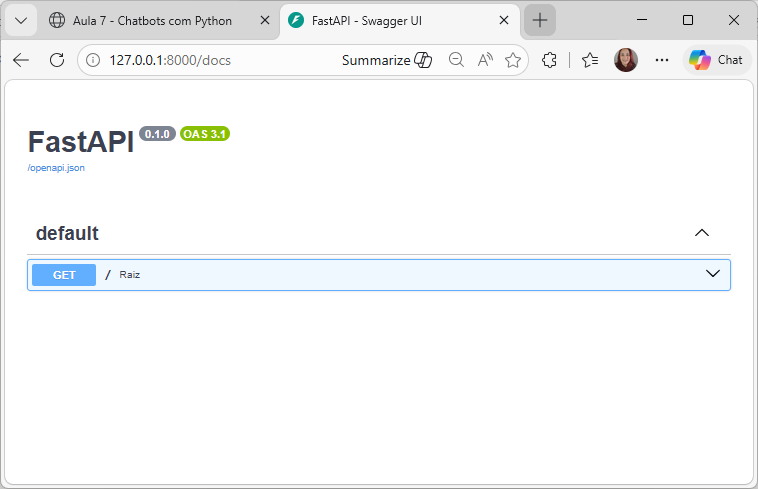
O GET é o método HTTP usado quando queremos buscar ou consultar uma informação. É o mesmo método que o navegador usa quando você digita um endereço e aperta Enter. Neste primeiro teste da API, usamos GET porque não estamos enviando uma pergunta para o chatbot. Estamos apenas consultando se a API está funcionando e recebendo uma resposta simples do servidor.
Existe também o método POST, usado em situações em que precisamos enviar dados para o servidor processar, como uma mensagem, um formulário ou um pedido. No caso do chatbot, o POST será mais adequado quando o usuário enviar uma pergunta para a API responder. Por enquanto, o GET resolve bem este primeiro teste.
Agora vamos criar um novo arquivo com essa mesma estrutura e usar o /docs para testar a rota na prática.
Vamos criar o arquivo 050_Exercicio.py com o código abaixo.
from fastapi import FastAPI import uvicorn app = FastAPI() @app.get("/") def raiz(): return {"mensagem": "API funcionando!"} if __name__ == "__main__": uvicorn.run("050_Exercicio:app", host="0.0.0.0", port=8000, reload=True)
Depois, vamos abrir o navegador em http://127.0.0.1:8000/docs.
Em seguida, vamos clicar em GET /, depois em "Try it out" e em "Execute".
Vamos observar o campo "Response body", ele mostra o JSON que a API devolveu.
Para encerrar o servidor, volte ao terminal e pressione Ctrl+C.
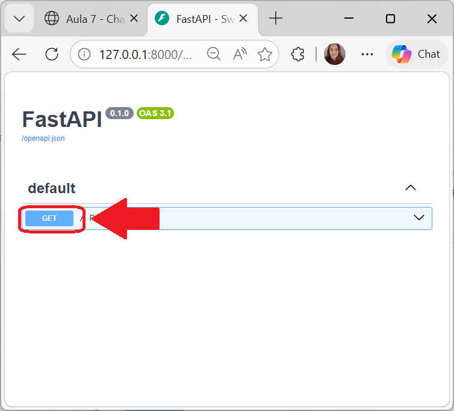
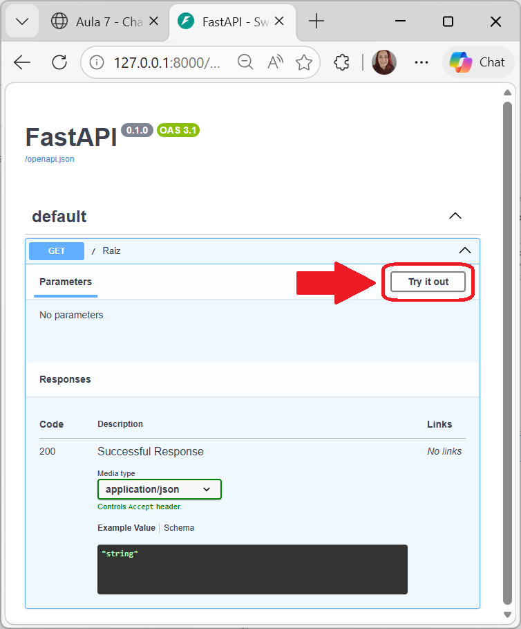
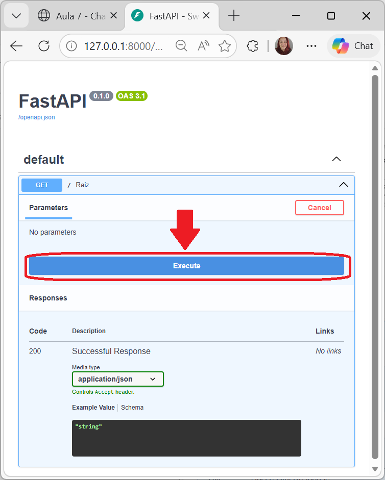
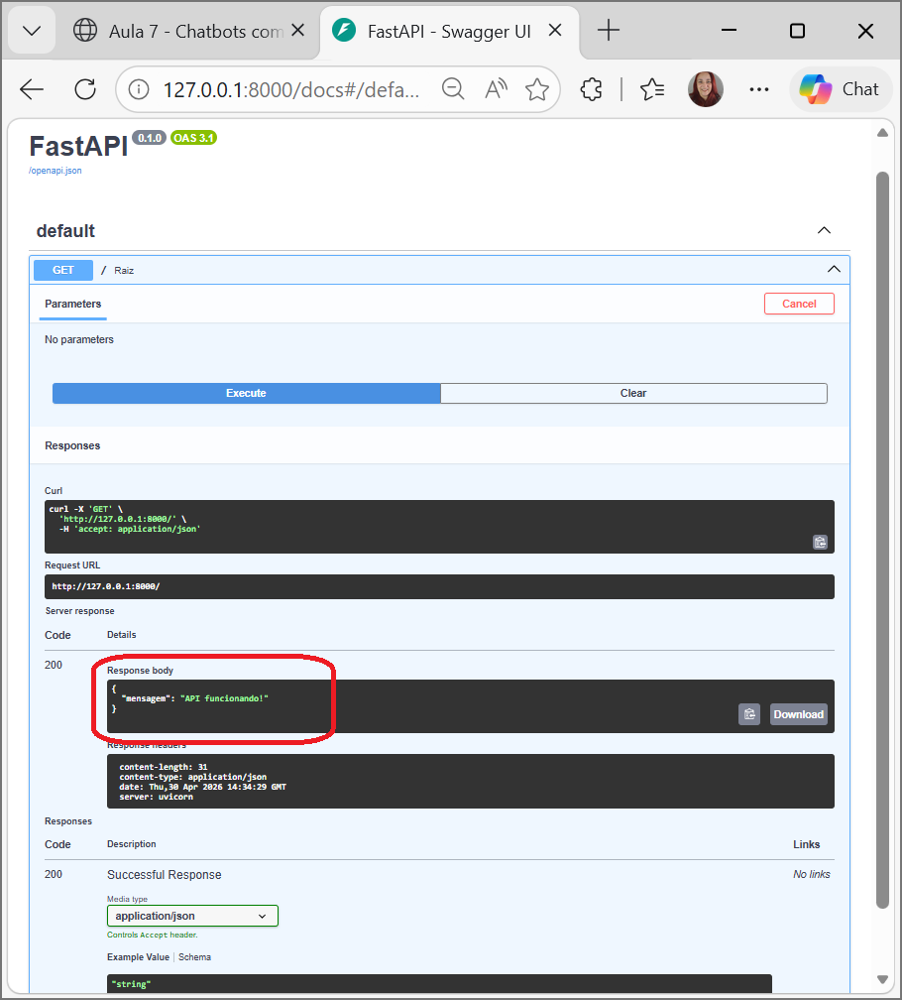
A estrutura básica está pronta. Agora vamos conectar o chatbot a ela. O endpoint POST vai receber o texto do usuário, passar para a API da OpenAI e devolver a resposta. O formato de ida e volta entre o front-end e o back-end é o JSON, um formato de texto simples que organiza os dados em pares de chave (nome do campo) e valor (dado).
Para a API receber uma mensagem, precisamos dizer ao FastAPI qual formato esse dado deve ter. No nosso caso, a mensagem chega em JSON e precisa ter um campo chamado texto. Para declarar esse formato, usamos o BaseModel, do Pydantic. O Pydantic ajuda o FastAPI a conferir se o dado recebido está no formato esperado. Se a API espera um campo chamado texto, ela verifica se esse campo veio na requisição antes de executar o restante do código.
Parece mais complexo do que é. Na prática, é criar uma classe com os campos que a requisição vai ter. No nosso caso, a mensagem do usuário tem só um campo, o texto. A classe Mensagem define exatamente isso, e o FastAPI cuida de receber o JSON e transformá-lo nessa classe automaticamente.
Vamos criar o arquivo 051_Exercicio.py com o código abaixo e executar clicando em Run Python File.
import warnings import urllib3 import httpx import os from fastapi import FastAPI from pydantic import BaseModel from openai import OpenAI from dotenv import load_dotenv import uvicorn warnings.filterwarnings("ignore") urllib3.disable_warnings() load_dotenv() app = FastAPI() client = OpenAI( api_key=os.getenv("OPENAI_API_KEY"), http_client=httpx.Client(verify=False) ) class Mensagem(BaseModel): texto: str @app.post("/chat") def chat(msg: Mensagem): try: resposta = client.chat.completions.create( model="gpt-4.1-mini", messages=[ { "role": "system", "content": "Você é um assistente direto e objetivo." }, {"role": "user", "content": msg.texto} ], max_tokens=150, temperature=0.4 ) return {"resposta": resposta.choices[0].message.content} except Exception as e: return { "resposta": "Não consegui processar. Tente novamente.", "erro": str(e) } if __name__ == "__main__": uvicorn.run("051_Exercicio:app", host="0.0.0.0", port=8000, reload=True)
| BaseModel | Define o formato do dado esperado. A classe Mensagem diz que a requisição deve ter um campo chamado texto do tipo str. Se o dado chegar fora desse formato, o FastAPI já responde com um erro antes de entrar na função. |
| msg: Mensagem | O parâmetro da função recebe o dado validado. O FastAPI lê o JSON da requisição, monta o objeto Mensagem e passa para a função automaticamente. Dentro da função, acessamos o texto digitado com msg.texto. |
| @app.post("/chat") | Define o endereço POST. Toda vez que alguém enviar um POST para /chat, essa função é chamada com o dado recebido. |
| try / except | Tratamento de erro. Se a chamada à OpenAI falhar por qualquer motivo, chave inválida, sem internet, timeout, a API não trava. Ela devolve uma resposta de erro no mesmo formato JSON, para que quem chamou saiba o que aconteceu. |
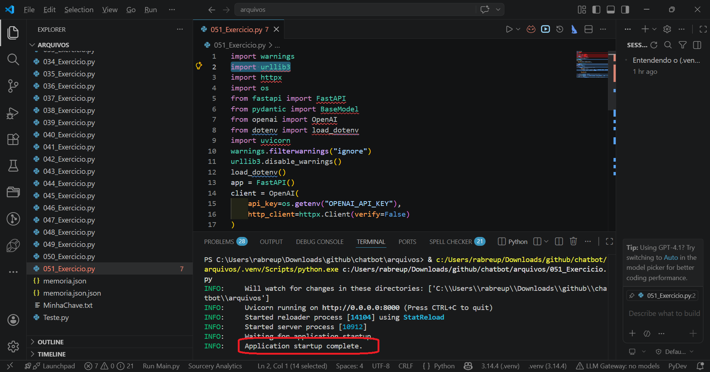
Acesse http://127.0.0.1:8000/docs e abra a rota POST /chat.
Em seguida, vamos clicar em "Try it out" e no campo "Request body" coloque: {"texto": "Qual é a capital do Brasil?"}.
Execute e observe o campo "Response body". A chave "resposta" deve conter a resposta da IA.
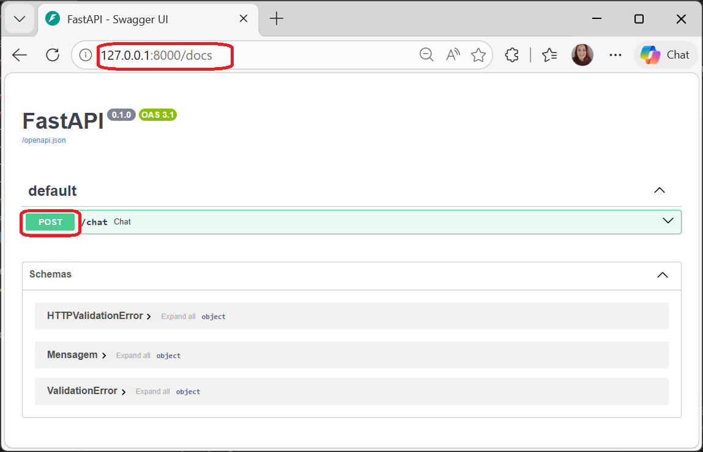
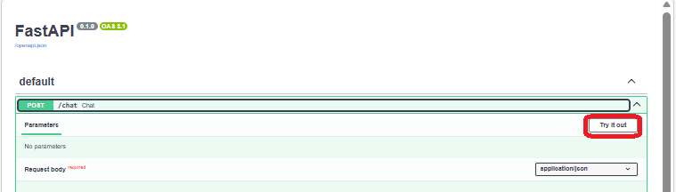
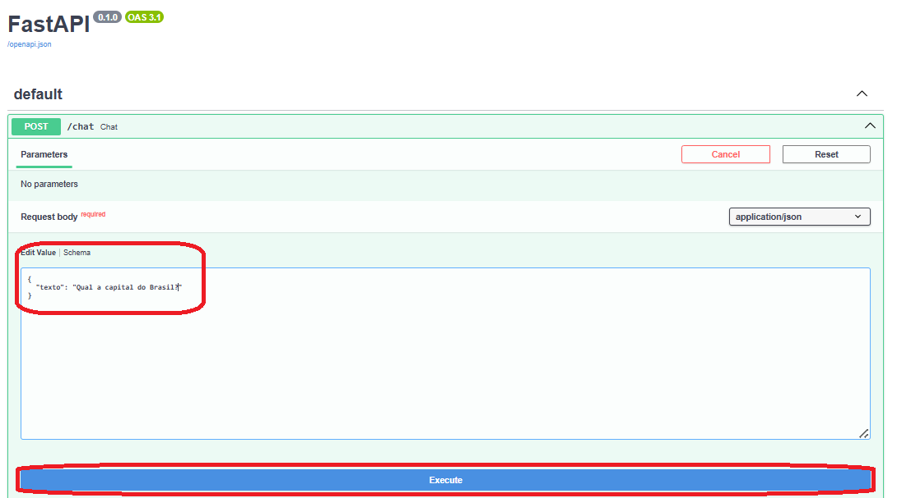
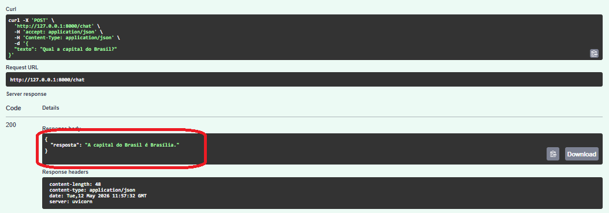
Teste também com uma pergunta que cause erro deliberado: remova a chave do .env temporariamente e observe o que a API devolve. Depois restaure a chave.
Vamos testar rodar o código sem a chave do .env.
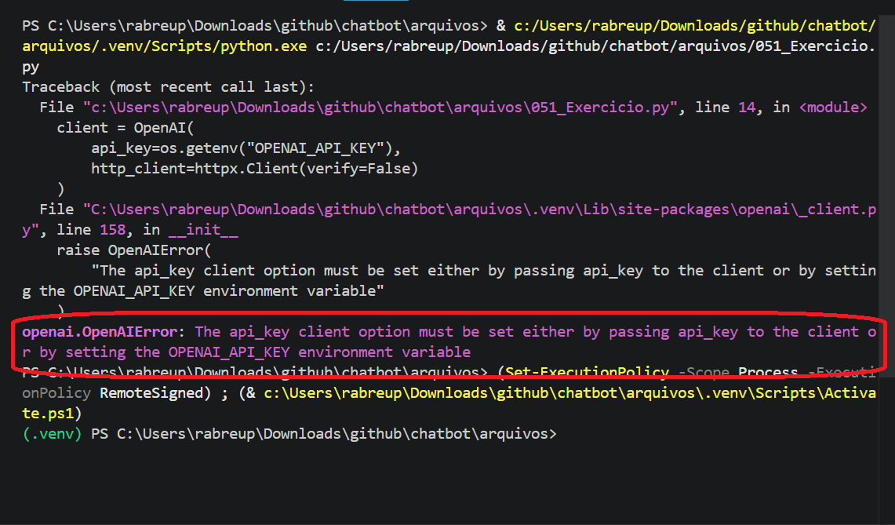
Vamos descansar dois minutos e voltamos prontos para recomeçar.
O chatbot funciona, mas ainda tem um detalhe importante que precisa de atenção antes de mostrar para qualquer pessoa: a chave da API da OpenAI. No código atual, ela vem do arquivo .env via os.getenv(), e isso está correto para o back-end. O problema acontece quando o projeto vai para a internet, ou quando é necessário criar uma interface visual em HTML.
A separação entre back-end e front-end resolve esse problema de forma elegante. O back-end é o Python rodando no servidor, e ele guarda a chave com segurança no .env. O front-end é a página HTML que o usuário vê no navegador, e ela nunca precisa saber qual é a chave. O front-end só sabe o endereço da API, que é http://127.0.0.1:8000/chat, e envia as mensagens para lá.
.env do servidor. Front-end só vê a resposta final.Para que a página HTML consiga falar com a API Python, é preciso liberar essa comunicação no servidor. Isso é feito com uma configuração chamada CORS, que em português seria algo como "compartilhamento de recursos entre origens diferentes". Quando o navegador tenta acessar uma API em um endereço diferente do que a página veio, ele primeiro pergunta ao servidor se isso é permitido. O CORS é a resposta do servidor para essa pergunta.
No FastAPI, adicionamos o CORS com um middleware, que é uma camada que intercepta todas as requisições antes de chegarem aos endpoints. Agora vamos montar o arquivo completo desta etapa, com CORS habilitado, tema configurável e tratamento de erros.
Vamos criar o arquivo 052_Exercicio.py e escrever o código abaixo.
import warnings import urllib3 import httpx import os from fastapi import FastAPI from fastapi.middleware.cors import CORSMiddleware from pydantic import BaseModel from openai import OpenAI from dotenv import load_dotenv import uvicorn warnings.filterwarnings("ignore") urllib3.disable_warnings() load_dotenv() app = FastAPI() app.add_middleware( CORSMiddleware, allow_origins=["*"], allow_methods=["*"], allow_headers=["*"], ) client = OpenAI( api_key=os.getenv("OPENAI_API_KEY"), http_client=httpx.Client(verify=False) ) TEMA = ( "Você é um assistente de suporte técnico de uma empresa de internet. " "Responda sempre em português, de forma clara e acessível para qualquer pessoa. " "Se a pergunta não for sobre suporte técnico de internet, diga educadamente que " "não pode ajudar com esse assunto e ofereça ajuda no tema correto." ) class Mensagem(BaseModel): texto: str @app.post("/chat") def chat(msg: Mensagem): try: resposta = client.chat.completions.create( model="gpt-4.1-mini", messages=[ {"role": "system", "content": TEMA}, {"role": "user", "content": msg.texto} ], max_tokens=200, temperature=0.4 ) return {"resposta": resposta.choices[0].message.content} except Exception as e: return { "resposta": "Serviço temporariamente indisponível.", "erro": str(e) } if __name__ == "__main__": uvicorn.run("052_Exercicio:app", host="0.0.0.0", port=8000, reload=True)
| CORSMiddleware | Libera a comunicação entre a página HTML e a API. Sem isso, o navegador bloquearia as requisições vindas do front-end por segurança. O allow_origins=["*"] aceita requisições de qualquer origem, o que é prático durante o desenvolvimento. |
| TEMA | O system prompt vira uma constante com nome claro. Colocar o tema numa variável separada facilita muito a personalização. Para mudar o chatbot de suporte técnico para atendimento de restaurante, basta trocar o conteúdo dessa variável. |
Rode o servidor.
Teste no /docs (http://127.0.0.1:8000/docs) enviando uma pergunta dentro do tema de suporte técnico.
Teste enviando uma pergunta fora do tema, como "Qual é a receita de bolo?", e observe o comportamento.
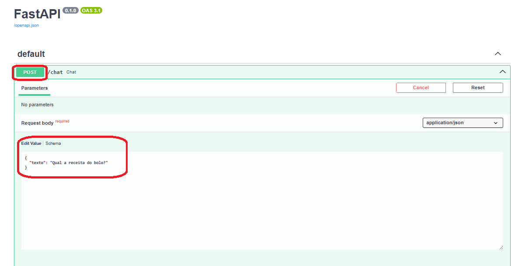
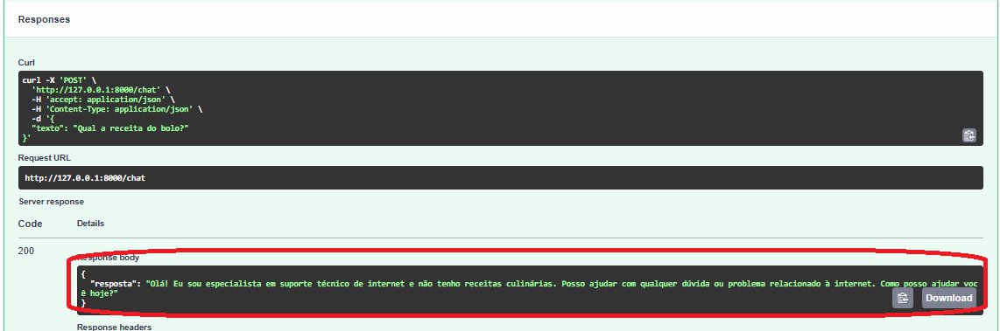
Agora faremos um teste utilizando uma página em HTML, a: index.html. Baixe o arquivo abaixo e verifique o comportamento, veja a resposta chegando do back-end.
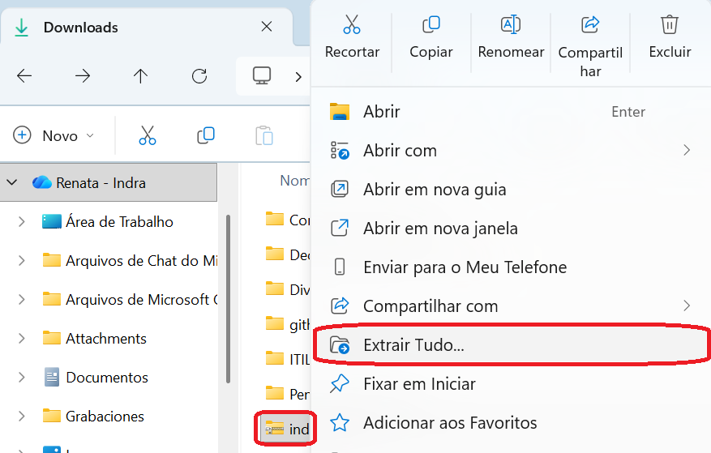
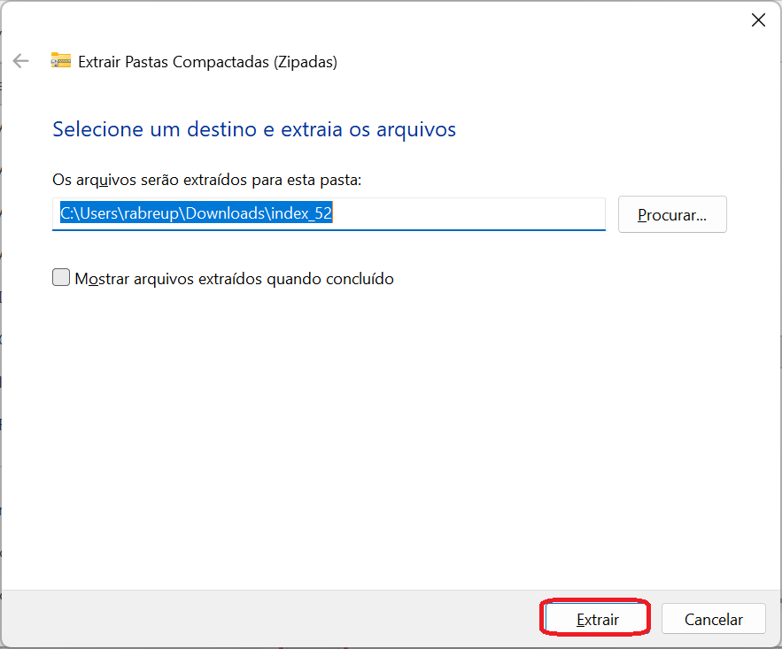
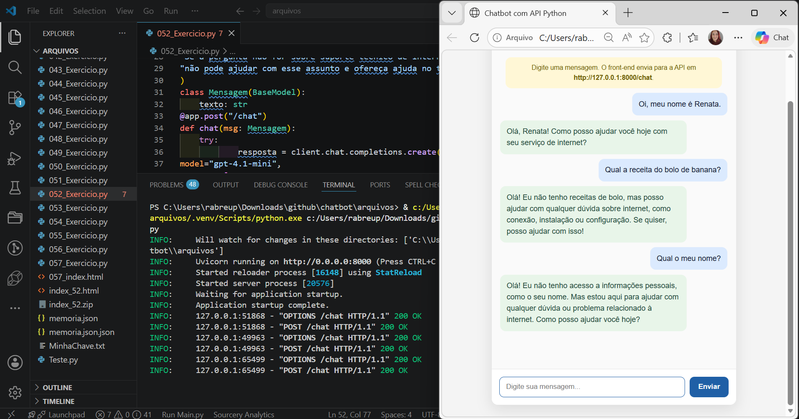
Com o back-end rodando e a interface HTML aberta, o sistema funciona de ponta a ponta. O usuário digita no navegador, o JavaScript da página envia um POST para http://127.0.0.1:8000/chat, o Python processa, chama a OpenAI, e devolve o JSON com a resposta. O JavaScript lê esse JSON e exibe na tela. Em nenhum momento a chave da API aparece no navegador.
python 052_Exercicio.py aparecer a mensagem "Address already in use", significa que a porta 8000 já está ocupada por outro servidor que ficou rodando. Para resolver, encerre o terminal anterior ou mude o número da porta para 8001 no código.
Agora você vai trabalhar individualmente, você lê o enunciado e tenta fazer, se tiver duvida, pode acessar a possível solução, mas antes... dê uma olhadinha nas dicas abaixo.
chat(msg). Assim, ela continua existindo enquanto o servidor estiver rodando.global. Sem global, o Python entende que você está criando uma variável nova só dentro da função, e a informação some quando a execução termina.normalizar() serve para comparar texto com mais segurança. Essa função transforma a frase em minúsculas e remove acentos. Assim, a API consegue reconhecer expressões como Meu nome é Ana, meu nome e ana ou MEU NOME É ANA sem depender de um jeito único de escrever.TEMA, você pode criar uma função como montar_system(). Ela lê o perfil atual e devolve o prompt já atualizado. Desse jeito, se o nome do usuário tiver sido guardado, ele entra automaticamente no comportamento do chatbot na próxima resposta.
nome_usuario = None def normalizar(texto): ... def montar_system(): ... @app.post("/chat") def chat(msg: Mensagem): global nome_usuario texto_norm = normalizar(msg.texto) if "meu nome e" in texto_norm: nome_usuario = ... return {"resposta": ...} resposta = client.chat.completions.create( messages=[ {"role": "system", "content": montar_system()}, {"role": "user", "content": msg.texto} ] )
| nome_usuario = None | Guarda o perfil fora da função. Começa vazio e pode receber o nome do usuário depois. |
| global nome_usuario | Permite alterar a variável de fora. É isso que faz o dado continuar disponível nas próximas chamadas. |
| normalizar(msg.texto) | Prepara o texto para comparação. Ajuda a detectar a mesma intenção mesmo quando o usuário escreve com maiúsculas ou acentos diferentes. |
| if "meu nome e" in texto_norm | Verifica se a mensagem traz uma informação de perfil. Quando isso acontece, a API atualiza o nome antes de chamar o modelo. |
| montar_system() | Monta o prompt no momento da requisição. Assim, o chatbot responde com base no perfil mais atual. |
Agora é a sua vez.
Crie o arquivo 053_Exercicio.py com um chatbot FastAPI completo. Além da rota /chat, adicione uma segunda rota GET chamada /status que devolve um JSON com o nome do seu chatbot e uma mensagem indicando que o serviço está ativo. Teste as duas rotas no /docs.
import warnings import urllib3 import httpx import os from fastapi import FastAPI from fastapi.middleware.cors import CORSMiddleware from pydantic import BaseModel from openai import OpenAI from dotenv import load_dotenv import uvicorn warnings.filterwarnings("ignore") urllib3.disable_warnings() load_dotenv() app = FastAPI() app.add_middleware( CORSMiddleware, allow_origins=["*"], allow_methods=["*"], allow_headers=["*"], ) client = OpenAI( api_key=os.getenv("OPENAI_API_KEY"), http_client=httpx.Client(verify=False) ) TEMA = ( "Você é um assistente de suporte técnico de uma empresa de internet. " "Responda sempre em português, de forma clara e acessível. " "Se a pergunta não for sobre suporte técnico, diga educadamente que não pode ajudar." ) class Mensagem(BaseModel): texto: str @app.get("/status") def status(): return { "chatbot": "Suporte Net Fácil", "status": "ativo", "mensagem": "API funcionando corretamente." } @app.post("/chat") def chat(msg: Mensagem): try: resposta = client.chat.completions.create( model="gpt-4.1-mini", messages=[ {"role": "system", "content": TEMA}, {"role": "user", "content": msg.texto} ], max_tokens=200, temperature=0.4 ) return {"resposta": resposta.choices[0].message.content} except Exception as e: return { "resposta": "Serviço temporariamente indisponível.", "erro": str(e) } if __name__ == "__main__": uvicorn.run("053_Exercicio:app", host="0.0.0.0", port=8000, reload=True)
A rota /status fica registrada antes da classe Mensagem. Ao acessar http://127.0.0.1:8000/status ou testar pelo /docs, o JSON aparece com os dois campos.
Crie o arquivo 054_Exercicio.py. Escolha um tema diferente para o chatbot, como atendimento de restaurante, assistente de livraria ou ajuda de academia. Reescreva a variável TEMA para o novo contexto. O system prompt deve definir claramente o que o chatbot faz, o que ele não responde e o tom de linguagem adequado para o público. Teste com perguntas dentro e fora do tema.
import warnings import urllib3 import httpx import os from fastapi import FastAPI from fastapi.middleware.cors import CORSMiddleware from pydantic import BaseModel from openai import OpenAI from dotenv import load_dotenv import uvicorn warnings.filterwarnings("ignore") urllib3.disable_warnings() load_dotenv() app = FastAPI() app.add_middleware( CORSMiddleware, allow_origins=["*"], allow_methods=["*"], allow_headers=["*"], ) client = OpenAI( api_key=os.getenv("OPENAI_API_KEY"), http_client=httpx.Client(verify=False) ) TEMA = ( "Você é um assistente da Livraria Páginas Abertas. " "Ajude clientes com recomendações de livros, dúvidas sobre gêneros literários " "e informações gerais de atendimento da livraria. " "Se a pergunta não tiver relação com livros ou com a livraria, explique com educação " "que só pode ajudar nesse contexto. Use linguagem acolhedora, simples e objetiva." ) class Mensagem(BaseModel): texto: str @app.post("/chat") def chat(msg: Mensagem): try: resposta = client.chat.completions.create( model="gpt-4.1-mini", messages=[ {"role": "system", "content": TEMA}, {"role": "user", "content": msg.texto} ], max_tokens=200, temperature=0.4 ) return {"resposta": resposta.choices[0].message.content} except Exception as e: return { "resposta": "Serviço temporariamente indisponível.", "erro": str(e) } if __name__ == "__main__": uvicorn.run("054_Exercicio:app", host="0.0.0.0", port=8000, reload=True)
Nesta solução, o arquivo já está completo. A parte mais importante é a variável TEMA, porque é ela que define o assunto, o limite do chatbot e o jeito de responder.
Crie um arquivo 055_Exercicio.py que combine o que foi visto até aqui. A API deve ter um endpoint POST /chat que, além de responder à mensagem, também detecta quando o usuário informa o nome (com "meu nome é") e guarda esse dado em uma variável global. O system prompt deve ser reconstruído a cada chamada com o nome do usuário, quando disponível. O tema do chatbot é livre, mas deve estar claramente definido no system prompt. Construa o arquivo do zero.
import warnings import urllib3 import httpx import os import unicodedata from fastapi import FastAPI from fastapi.middleware.cors import CORSMiddleware from pydantic import BaseModel from openai import OpenAI from dotenv import load_dotenv import uvicorn warnings.filterwarnings("ignore") urllib3.disable_warnings() load_dotenv() app = FastAPI() app.add_middleware( CORSMiddleware, allow_origins=["*"], allow_methods=["*"], allow_headers=["*"], ) client = OpenAI( api_key=os.getenv("OPENAI_API_KEY"), http_client=httpx.Client(verify=False) ) nome_usuario = None def normalizar(texto): texto = texto.lower() texto = unicodedata.normalize("NFD", texto) return "".join( caractere for caractere in texto if unicodedata.category(caractere) != "Mn" ) def extrair_nome(texto_original): texto_normalizado = normalizar(texto_original) marcador = "meu nome e" if marcador not in texto_normalizado: return None inicio = texto_normalizado.find(marcador) + len(marcador) nome = texto_original[inicio:].strip() nome = nome.split(".")[0].split(",")[0].strip() if not nome: return None return nome.title() def montar_system(): base = ( "Você é um assistente da Livraria Páginas Abertas. " "Ajude com recomendações e informações sobre livros. " "Se a pergunta não for sobre livros ou sobre a livraria, diga que não pode " "ajudar com esse assunto. Seja claro, acolhedor e conciso." ) if nome_usuario: base += f" O nome do cliente é {nome_usuario}. Use o nome com moderação." return base class Mensagem(BaseModel): texto: str @app.post("/chat") def chat(msg: Mensagem): global nome_usuario nome_detectado = extrair_nome(msg.texto) if nome_detectado: nome_usuario = nome_detectado return { "resposta": ( f"Prazer, {nome_usuario}. Vou lembrar do seu nome enquanto " "o servidor estiver ligado." ) } try: resposta = client.chat.completions.create( model="gpt-4.1-mini", messages=[ {"role": "system", "content": montar_system()}, {"role": "user", "content": msg.texto} ], max_tokens=200, temperature=0.4 ) return {"resposta": resposta.choices[0].message.content} except Exception as e: return { "resposta": "Serviço temporariamente indisponível.", "erro": str(e) } if __name__ == "__main__": uvicorn.run("055_Exercicio:app", host="0.0.0.0", port=8000, reload=True)
A palavra-chave global dentro da função chat indica que a variável nome_usuario que queremos modificar é a que está fora da função, não uma nova variável local. Sem global, a atribuição criaria uma variável local que desaparece ao fim da chamada. A função montar_system() é chamada a cada requisição, garantindo que o system prompt sempre reflita o estado atual do perfil.
Vamos para a próxima etapa. Nos vemos lá.